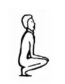

Rune Grimoire
Sowilo
Modern Relevance
Sowilo, the sun rune, represents life force, nature's balance, and enlightenment. It promises bright happiness, successful endeavors, and flourishing.
Tree, Element, and Deity
Tree: juniper
Element: air
Meaning: sun; triumph over the darkness
Names Across Dialects
| Dialect | Word | Meaning |
|---|---|---|
| Proto-Germanic | sowilo | Sun |
| Gothic | saugil | Sun |
| Old English | sigil | Sun |
| Old Norse | sól | Sun |
| Icelandic | Sól | Sun |
| Norwegian | Sol | Sun |
| Old Danish | Sulu | Sun |
| Old German | Sil, Sigo, Sulhil | Sun |
Phonetic value: s
Esoteric interpretation: the holy solar wheel
Ideographic interpretation: one part of the dynamic solar wheel, or the thunderbolt
The Sig Rune
Also known as the Sig or Sigel rune, this is the sun rune, and it represents a sunbeam. Tipped slightly, its shape resembles either the letter S or a lightning bolt. Because of this, it was doubled and taken up in Nazi insignia, where its meaning was shifted to "Victory," from the German Sieg.
The Archetypal Sun
The S-rune is the archetypal sun and the light of that sun, symbolically expressed as the solar wheel. The concept of the turning wheel (Old Norse hvel) is central to the understanding of this rune. It is represented as the wheels of the solar wagon as well as the disk borne by that cosmic vehicular force. This symbol complex is the center of the ancient hyperborean sun cult, which was at its peak in the Bronze Age.
The sun was known by two special names in the North, reflected in Old Norse sól and the cult word sunna (both feminine). In the Alvismal (stanza 16) of the Elder Edda: "It is called Sól among men and Sunna among the Gods." Sól represents the phenomenon, while Sunna is the noumenon, the spiritual power residing in the concept. The mystery of the sun is essentially a feminine one: the sun and solar power were considered feminine attributes by the ancient Germanic peoples.
Magickal Will and the Hvel
Sowilo is the magickal will that is active throughout the multiverse. Within the individual, this will is expressed through the "spiritual wheels," the hvel. This word is an exact cognate to the Sanskrit chakra. In this aspect it is a counterforce to the power of cosmic ice. The S-rune has often been connected to the power of the lightning bolt, and thus to the concepts embodied in Thurisaz.
The Guide and the Goal
Sowilo is the eminent spiritual force that guides the vitki through the paths of Yggdrasill. It is an aspect of the goal, and also the active, willed path toward that goal. The S-rune may serve as a dynamic connection between heaven and earth (Asgardhr and Midhgardhr). Sowilo is the rune of the Germanic code of honor, a powerful path to ecstatic experience.
In later times this rune became known as the "victory rune." It is indeed a potent, willed force that can bring great success and victory to an individual when properly applied. However, the true sigrun (victory rune) of the ancients was the T-rune (Tiwaz).
Rune Character
Sowilo is the rune of the Sun and can be used in masculine magick. A rune of invincibility and final triumph. This rune is movement and action and bestows the will to take action. It symbolizes the chakras and the lightning bolt, the spark of life. Kundalini is like lightning and flashes in the brain when it connects with the sixth chakra.
Sowilo is used to strengthen the will and confidence. It has both shielding and combative properties. Used in understanding the energy forces in the world and on the astral. When used with other runes, it activates and empowers them. It can be used in meditation and to empower the chakras. Brings out leadership abilities and the ability to inspire others. Enhances strength of spirit.
Crystal Pairings
- Diamond is the gem used with this rune
Keywords
- Solar wheel
- Magickal will
- Guide
- Goal and path
- Success
- Honor
Galdr
sowilo sowilo sowilo
su sa si se so
sul sal sil sel sol
us as is es os
so se si sa su
Stadha
I. Squat so that the calves and thighs are pressed together along their entire length, with the buttocks resting on the heels. Keep the torso vertical, with the arms along the sides of the thighs.
II. Standing with the body in the form of the S-rune, angle the arms along the sides of the body while the joints of the hips and knees form the rune.
These postures are reflected by the Old Norse term knesól (knee-sun), which describes the S-rune.

Magickal Workings
- Strengthening of the psychic centers (hvel)
- Increase in spiritual will
- Guidance through the pathways, enlightenment
- Victory and success through individual will
- Activating and empowering other runes
- Empowering the chakras through meditation
- Masculine magick
Constructive Applications
Strengthens the will and confidence. Has both shielding and combative properties. Used in understanding energy forces in the world and on the astral. When used with other runes, it activates and empowers them. Brings out leadership abilities and the ability to inspire others. Enhances strength of spirit. Can be used in meditation to empower the chakras.
Stadhagaldr Rites
Increase in Magickal Power
Sowilo projects the rune-might outward through the vitki as the final stadha:
Rune-might work through me.
See Stadhagaldr (Posture Magick) for the full rite.
Success and Victory
Sowilo steers the vitki from success to success:
Speed overcomes in me!
Steering might of Sowilo (the sun) lead me from success to success.
See Stadhagaldr (Posture Magick) for the full rite.
Increase in Creative Force
Sowilo steers the vitki with solar speed:
The speed of Sowilo (the sun) steers me.
See Stadhagaldr (Posture Magick) for the full rite.
Rite of Need
Sowilo steers the vitki forward with solar might:
Steering might of the sun lead me forward.
See Stadhagaldr (Posture Magick) for the full rite.